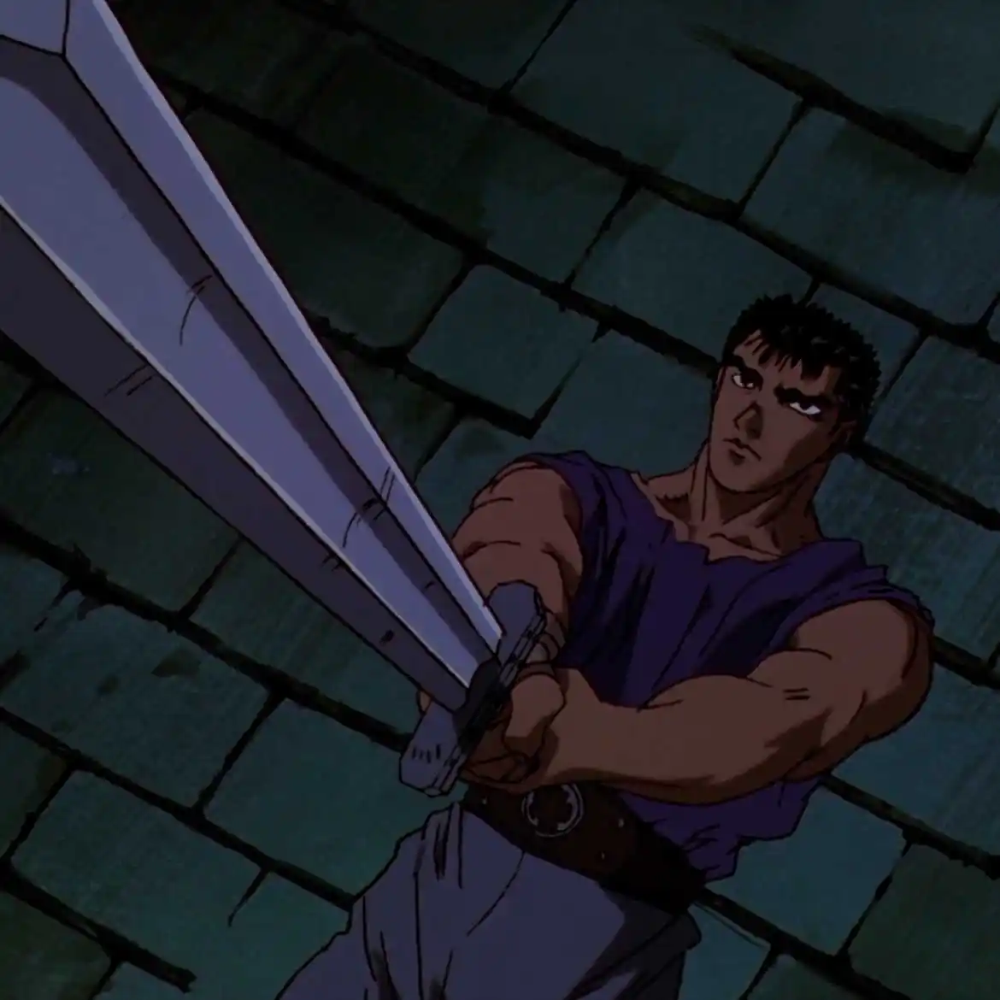
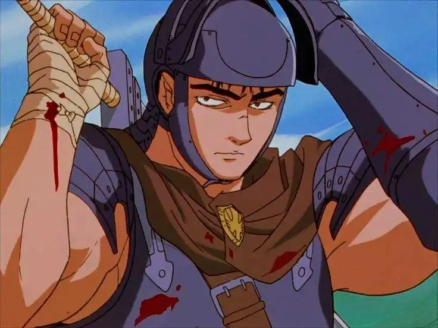
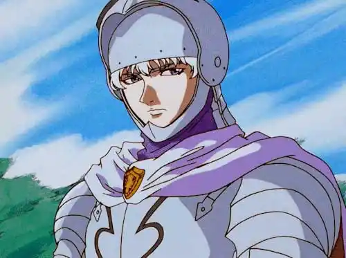
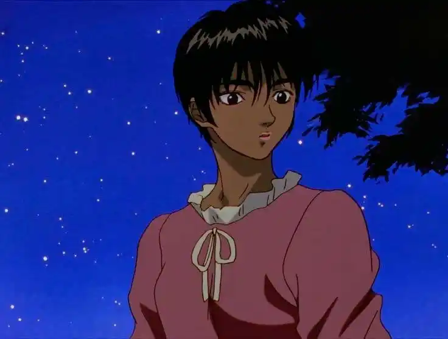

About Guts

Guts is the main protagonist of Berserk, a dark fantasy anime released in 1997.
Raised on the battlefield, he became a lone mercenary known for his unmatched strength and massive sword.
His journey explores themes of destiny, sacrifice, revenge and survival in a brutal medieval world.
Main Characters

Guts
A wandering mercenary carrying a gigantic sword and fighting against fate itself.

Griffith
The charismatic leader of the Band of the Hawk with a dream of ruling his own kingdom.

Casca
A skilled warrior struggling between loyalty, trauma and love.
“In this world, is the destiny of mankind controlled by some transcendental entity or law?”
— Berserk (1997)